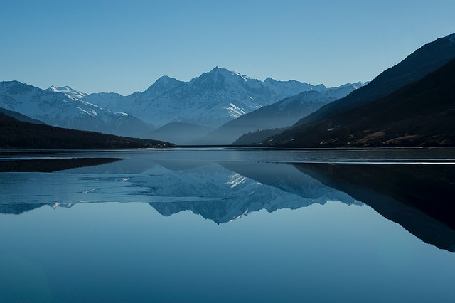

Lake texoma is located at the confluence of the Washita and Red Rivers, this is one of the largest lakes in the country.It is an extremely popular and beautiful place. In the lake around 70 species of fish, including bass, catfish and white crappie are found.
Find out more
Check out all the Wildlife
As spawning season approaches, the fish acquire a humpback and protuberant jaw. After spawning, they die and their carcasses provide a feast for gatherings of mink, bears, and bald eagles.
See the Wildlife

From Tents to Resorts
Lake Texoma is wonderful places to stay. You have the ability to sleep in the outdoors in a tent, or relax like a king at a five star resort. Here are our top three resorts:

Pack Accordingly
One of most important things when it comes to traveling through the great outdoors is packing accordingly. Here are a few tips:
- Bring layers of clothing
- Pack sunscreen
- Carry extra water just in case
- Pack light